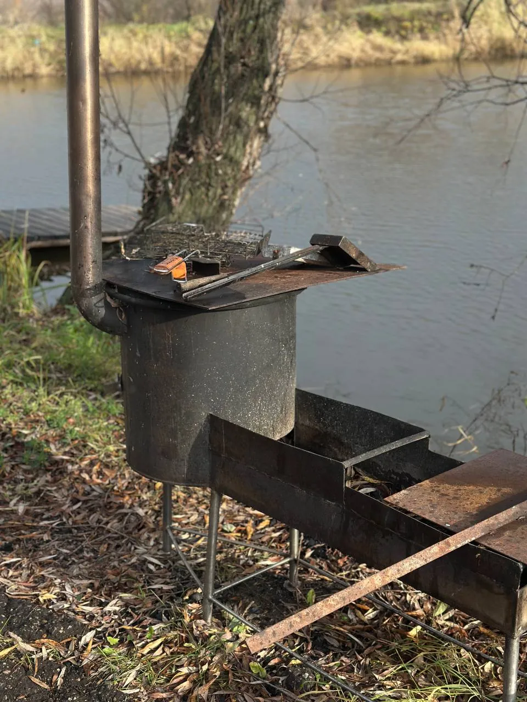

На свежем воздухе
У воды свой ритм.
Оставьте повседневную суету за городом.
Здесь можно просто смотреть на воду.

Рыбалка.
И тишина рядом.
Устроиться на берегу с удочкой или провести время у воды — выбирайте свой способ замедлиться.
Возможность рыбалки и её условия уточняйте при планировании отдыха.
Посмотреть территориюОтдых на воздухе
Длинные разговоры.
Отдых у мангала.
Беседки и мангальная зона — чтобы собраться за одним столом и провести больше времени на природе.
Условия использования беседок и мангальной зоны уточняются вместе с условиями отдыха в усадьбе.


Пруд и природа
Побыть
на берегу.
Пруд, деревья, терраса у воды и места под навесом — здесь можно провести время на природе и собраться за столом.
Мангальная зона дополняет отдых в усадьбе. Условия её использования и возможность рыбалки уточняются при планировании приезда.
Все фотографии территории